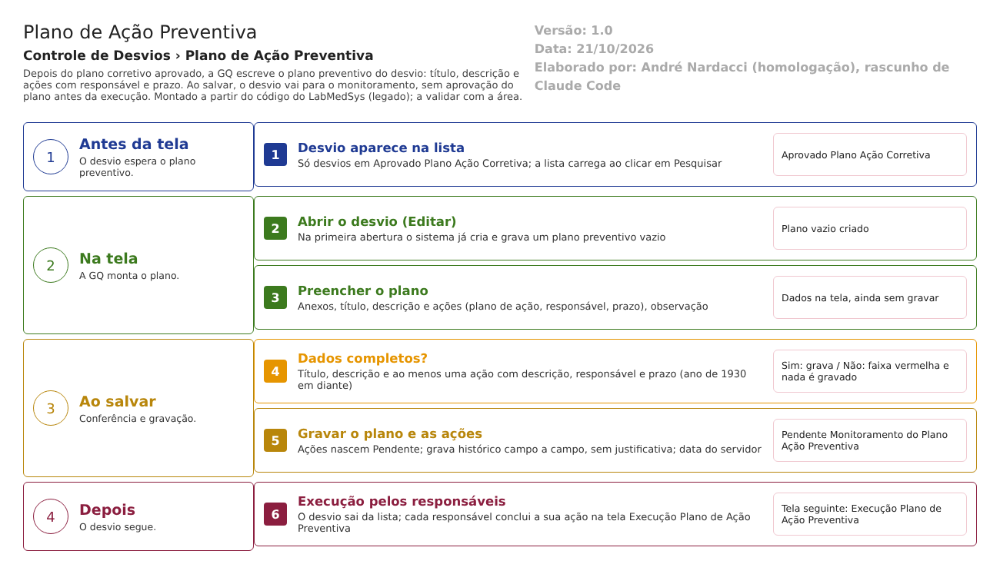

Resumo da tela
Plano de Ação Preventiva
Caminho no menu: Controle de Desvios › Plano de Ação Preventiva.
Para que serve: depois que o plano de ação corretiva foi aprovado, a Garantia da Qualidade (GQ) escreve aqui o plano de ação preventiva do desvio, isto é, o que será feito para o problema não voltar a acontecer. A tela pede um título e uma descrição do plano e uma lista de ações, cada uma com responsável e prazo. Também aceita anexos e uma observação.
Quem usa: a equipe da GQ responsável pela CAPA (ações corretivas e preventivas). Os responsáveis por cada ação só aparecem aqui como nomes escolhidos numa lista; quem executa a ação usa a tela seguinte (Execução Plano de Ação Preventiva).
Em que situação o desvio chega aqui: Aprovado Plano Ação Corretiva (Bloco2/Controllers/PlanoAcaoPreventivaRNCController.cs:55). É a única situação listada.
Para onde vai ao salvar: Pendente Monitoramento do Plano Ação Preventiva (PlanoAcaoPreventivaRNCController.cs:181). Não há aprovação do plano antes da execução (ponto de atenção 7 do fluxo Desvios e CAPA).
Arquivos do código (caminhos relativos a 5.garantia_qualidade/app/): - Controlador: HSolutions.GQ.UI/Areas/Bloco2/Controllers/PlanoAcaoPreventivaRNCController.cs - Views: HSolutions.GQ.UI/Areas/Bloco2/Views/PlanoAcaoPreventivaRNC/Index.cshtml (lista), Editar.cshtml (tela do plano) e Incluir.cshtml (modelo vazio, sem uso) - Trecho comum "Resumo do RNC": HSolutions.GQ.UI/Areas/Bloco2/Views/Shared/_PartialRegistroNC.cshtml - Scripts: HSolutions.GQ.UI/Areas/Bloco2/Script/PlanoAcaoPreventivaIndex.js e PlanoAcaoPreventivaSalvar.js
Como ler as fontes nas tabelas: "Bloco2/" é HSolutions.GQ.UI/Areas/Bloco2/; "UI/" é HSolutions.GQ.UI/; "Domain/" é HSolutions.GQ.Domain/; "Reports/" é HSolutions.GQ.Reports/Bloco2/; "DB/" é Hsolutions.GQ.DB/Tables/; "Infra/" é HSolutions.GQ.Infrastructure/. Quando só aparece o nome do controlador, é PlanoAcaoPreventivaRNCController.cs.
Estado nos testes: a tela ainda não tem caso próprio executado. O desvio RD 006/26 passou por ela e chegou a Pendente Monitoramento do Plano Ação Preventiva (execucao/2026-10-15/resultado.md, CT-GQ-023), mas o passo não está descrito no resultado. Inferência: o plano foi salvo sem erro.
Manual do usuário
Lista (Index)
- No menu, abra Controle de Desvios › Plano de Ação Preventiva. A tela abre com o bloco Pesquisa e a lista vazia: a lista só carrega ao clicar em Pesquisar (PlanoAcaoPreventivaIndex.js:2-6 só liga os calendários).
- Se quiser, preencha RD/Nº (número do desvio), Descrição (parte do texto), Data Início e até (datas no formato dd/mm/aaaa, com calendário) e Situação (TODAS ou Aprovado Plano Ação Corretiva).
- Clique em Pesquisar. A lista mostra, por desvio, o RD/Nº, a Descrição, a Data Abertura e a Situação, e ao lado três ícones: Editar (lápis), Log (histórico das alterações) e Imprimir.
- Limpar apaga os filtros. Não há botão Incluir: o plano nasce do desvio, não é cadastrado do zero.
- Se nada for encontrado, a lista mostra "A pesquisa não retornou nenhum resultado."
Tela do plano (Editar)
- Clique no lápis do desvio. Abre a tela com cinco blocos, de cima para baixo: Resumo do RNC, Anexos, Inclusão Plano de Ação, Ações Preventivas e Responsável Pelo Plano De Ação. O primeiro bloco é só leitura e repete o que foi registrado no desvio (número, meio de detecção, descrição e observação).
- Anexos (opcional): clique em escolher arquivo, escreva a Descrição e clique em Enviar. Aparece "Arquivo enviado com sucesso." e o arquivo entra na lista (CÓDIGO, DESCRIÇÃO, ARQUIVO, TAMANHO). A lixeira tira o anexo da lista e o clipe abre o arquivo.
- Inclusão Plano de Ação: preencha Ação Preventiva (o título) e Descrição Ação Preventiva. Os dois são obrigatórios.
- Ações Preventivas: para cada ação, preencha Plano de Ação (o que fazer), escolha o Responsável na lista (todos os usuários do sistema) e informe o Prazo (dd/mm/aaaa), depois clique em Adicionar. A ação entra na tabela (Ações a Executar, Responsável, Prazo, Situação). Limpar esvazia os três campos. A lixeira da linha remove a ação da tabela antes de salvar. É preciso ao menos uma ação.
- Responsável Pelo Plano De Ação: Data/Hora e Responsável vêm preenchidos e travados (hora em que a tela foi aberta e nome de quem está conectado). Observação é opcional.
- Clique em Salvar. O sistema pergunta "Confirma a alteração do item?". Em SIM, grava. Aparece "Alteração efetuada com sucesso.", todos os campos ficam travados, o botão Salvar some e ficam Imprimir e Voltar.
- Se faltar algo, nenhuma gravação é feita e uma faixa vermelha aparece no bloco com o problema (ver Mensagens do sistema). A tela rola até a primeira faixa.
- Voltar leva à lista. Depois de salvo, o desvio sai da lista (a lista só mostra Aprovado Plano Ação Corretiva) e segue para a Execução.
- Imprimir (na lista ou na tela) abre numa nova janela o PDF "RELATÓRIO DE CAPA" do desvio, que reúne as etapas já feitas, inclusive este plano.
Telas internas que existem no código
- Incluir: existe só o arquivo (Incluir.cshtml), um modelo vazio com o título "Incluir". Nenhum controlador o chama e nenhum botão leva a ele.
- Cancelar: o script tem uma função Cancelar (PlanoAcaoPreventivaSalvar.js:332-337), mas a tela não tem o botão e o endereço de cancelamento não existe. Não se cancela o plano por aqui.
- Edição de uma ação já na tabela: a função existe no script, mas o ícone de editar está comentado (PlanoAcaoPreventivaSalvar.js:457-461). Só é possível excluir a ação e adicionar de novo.
Campos da tela
Lista (Index)
| Campo na tela | Tipo | Obrigatório | Regra, limite ou valores possíveis | Fonte (arquivo:linha) |
|---|---|---|---|---|
| RD/Nº | Texto | Não | Parte do número do desvio, sem o ano. A busca é por "contém" sobre o número gravado, que não inclui o "/26" | Bloco2/Views/PlanoAcaoPreventivaRNC/Index.cshtml:24; PlanoAcaoPreventivaRNCController.cs:57-58; Domain/Entities/Bloco2/ControleDesvios/RegistroNaoConformidade.cs:16-23 |
| Descrição | Texto | Não | Parte da descrição do desvio ("contém") | Index.cshtml:29; PlanoAcaoPreventivaRNCController.cs:60-61 |
| Data Início | Data | Não | dd/mm/aaaa, máscara e calendário. Filtra a data de criação do desvio (maior ou igual) | Index.cshtml:35; PlanoAcaoPreventivaIndex.js:2-3; PlanoAcaoPreventivaRNCController.cs:63-64 |
| até (Data Fim) | Data | Não | dd/mm/aaaa. Filtra a data de criação menor ou igual, sem somar um dia: desvios criados no dia final depois das 00:00 ficam de fora | Index.cshtml:39; PlanoAcaoPreventivaRNCController.cs:66-67 |
| Situação | Lista | Não | TODAS (valor 0) ou Aprovado Plano Ação Corretiva. Escolhendo a situação, o filtro também exige que o desvio já tenha um plano preventivo aberto | Index.cshtml:50-56; Bloco2/Models/PlanoAcaoPreventivaRNCIndexModel.cs:38-42; PlanoAcaoPreventivaRNCController.cs:69-73 |
| Coluna RD/Nº | Texto (resultado) | Não se aplica | Número com o ano, por exemplo 006/26; sem ano, aparece o Id com zeros | PlanoAcaoPreventivaIndex.js:24; Domain/Entities/Bloco2/ControleDesvios/RegistroNaoConformidade.cs:16-34 |
| Coluna DESCRIÇÃO | Texto (resultado) | Não se aplica | Descrição do desvio | PlanoAcaoPreventivaIndex.js:25 |
| Coluna DATA ABERTURA | Data (resultado) | Não se aplica | dd/MM/aaaa, da data de criação do desvio | PlanoAcaoPreventivaIndex.js:26; PlanoAcaoPreventivaRNCIndexModel.cs:25-34 |
| Coluna SITUAÇÃO | Texto (resultado) | Não se aplica | Situação do desvio (sempre Aprovado Plano Ação Corretiva, pela regra da consulta) | PlanoAcaoPreventivaIndex.js:27; PlanoAcaoPreventivaRNCController.cs:55 |
Tela do plano (Editar)
| Campo na tela | Tipo | Obrigatório | Regra, limite ou valores possíveis | Fonte (arquivo:linha) |
|---|---|---|---|---|
| Id do desvio (oculto) | Número | Preenchido pelo sistema | Identifica o desvio aberto | Bloco2/Views/PlanoAcaoPreventivaRNC/Editar.cshtml:35 |
| RD/Nº (Resumo do RNC) | Texto travado | Não | Número do desvio com o ano | Bloco2/Views/Shared/_PartialRegistroNC.cshtml:12 |
| Meios de detecção da não conformidade | Opção única travada | Não | Processo/Produção (1), Auditoria (2), Inspeção Sanitária (3), "Cotrole da Qualidade" (4, com erro de grafia na tela), Garantia da Qualidade (5), SAC/Fármaco (6), Outros (99) | _PartialRegistroNC.cshtml:21-83 |
| Outros (Resumo do RNC) | Texto travado | Não | Texto livre do método "Outros" | _PartialRegistroNC.cshtml:91 |
| Descrição Não Conformidade | Texto travado | Marcado com asterisco, mas travado | Descrição registrada no desvio | _PartialRegistroNC.cshtml:99 |
| Observação (Resumo do RNC) | Texto travado | Marcado com asterisco, mas travado | Observação registrada no desvio | _PartialRegistroNC.cshtml:103 |
| Arquivo (Anexos) | Arquivo | Sim, para enviar | Sem lista de tipos nem limite de tamanho. Mensagem "O arquivo não foi informado." sem arquivo | Bloco2/Views/PlanoAcaoPreventivaRNC/Editar.cshtml:45-47; UI/Views/Shared/_UploadArquivo.cshtml:76; UI/Controllers/UploadController.cs:125-130 |
| Descrição (Anexos) | Texto | Sim, para enviar | Mensagem "A descrição não foi informada." se vazia | UI/Views/Shared/_UploadArquivo.cshtml:82; UploadController.cs:129 |
| Lista de anexos | Tabela | Não | Colunas CÓDIGO, DESCRIÇÃO, ARQUIVO, TAMANHO; ícones lixeira e clipe. Vazia: "Nenhum arquivo listado." | UI/Views/Shared/_GridAnexos.cshtml:6-30, 51-60 |
| Ação Preventiva | Texto (caixa de uma linha) | Sim | Título do plano. Sem tamanho máximo na tela; a coluna do banco é NVARCHAR(MAX). Mensagem "A Ação Preventiva é obrigatória." | Editar.cshtml:70-71; Domain/Service/PlanoAcaoPreventivaValidator.cs:33-37; DB/TBL_PLANO_ACAO_PREVENTIVA_RNC.sql:5 |
| Descrição Ação Preventiva | Texto (4 linhas) | Sim | Descrição do plano. Sem tamanho máximo. Mensagem "A Descrição Ação Preventiva é obrigatória." | Editar.cshtml:76-77; PlanoAcaoPreventivaValidator.cs:39-43; DB/TBL_PLANO_ACAO_PREVENTIVA_RNC.sql:6 |
| Plano de Ação (da ação) | Texto | Sim | O que será feito. Sem tamanho máximo | Editar.cshtml:89-90; PlanoAcaoPreventivaSalvar.js:257-259 |
| Responsável (da ação) | Lista | Sim | Todos os usuários do Principal, com a primeira opção SELECIONE. O nome gravado vem do texto da lista no navegador | Editar.cshtml:92-94; PlanoAcaoPreventivaRNCController.cs:145-149; PlanoAcaoPreventivaSalvar.js:228,260-262 |
| Prazo (da ação) | Data | Sim | dd/mm/aaaa com máscara e calendário. Aceita data passada. O servidor recusa ano antes de 1930 | Editar.cshtml:97-98; PlanoAcaoPreventivaSalvar.js:73-74,263-265; PlanoAcaoPreventivaValidator.cs:73-77 |
| Id da ação (oculto) | Número | Preenchido pelo sistema | Vazio para ação nova; ação nova recebe um número provisório (quantidade de ações + 999) | Editar.cshtml:87; PlanoAcaoPreventivaSalvar.js:244 |
| Tabela de ações | Tabela | Pelo menos uma linha | Colunas Ações a Executar, Responsável, Prazo, Situação. Vazia: "A pesquisa não retornou nenhum resultado." Situação provisória na tela: "Pendente aprovação"; após salvar, a ação fica Pendente | Bloco2/Views/Shared/_GridAcoesPreventivas.cshtml:6-29; PlanoAcaoPreventivaSalvar.js:243; PlanoAcaoPreventivaRNCController.cs:309 |
| Data/Hora (Responsável Pelo Plano De Ação) | Data e hora travadas | Não | Hora em que a tela foi aberta. Não é o que se grava: o servidor usa a hora do servidor ao salvar | Editar.cshtml:125; PlanoAcaoPreventivaRNCController.cs:189 |
| Responsável (Responsável Pelo Plano De Ação) | Texto travado | Não | Nome de quem está conectado; é gravado como responsável do plano | Editar.cshtml:131; PlanoAcaoPreventivaRNCController.cs:187-188 |
| Observação (do plano) | Texto (4 linhas) | Não | Texto livre, sem tamanho máximo | Editar.cshtml:137; PlanoAcaoPreventivaRNCController.cs:190 |
Botões e ações
| Botão ou ação | Quando aparece | O que faz | Para onde leva o desvio | Fonte |
|---|---|---|---|---|
| Pesquisar | Sempre | Carrega a lista com os filtros | Não muda o desvio | Index.cshtml:44; PlanoAcaoPreventivaIndex.js:8-62 |
| Limpar (filtros) | Sempre | Esvazia os filtros e a Situação volta a TODAS; não esvazia a lista já carregada (o script limpa um elemento de outro nome) | Não muda o desvio | Index.cshtml:43; PlanoAcaoPreventivaIndex.js:84-91 |
| Editar (lápis) | Desvio em Aprovado Plano Ação Corretiva, na lista | Abre a tela do plano. Na primeira abertura, o sistema já cria um plano vazio e grava | Continua em Aprovado Plano Ação Corretiva | PlanoAcaoPreventivaIndex.js:29-32; PlanoAcaoPreventivaRNCController.cs:94-135 |
| Log (histórico) | Sempre na lista | Abre o histórico de alterações do desvio | Não muda o desvio | PlanoAcaoPreventivaIndex.js:33-36 |
| Imprimir (ícone na lista) | Sempre na lista | Abre o PDF Relatório de CAPA do desvio | Não muda o desvio | PlanoAcaoPreventivaIndex.js:41-44; PlanoAcaoPreventivaRNCController.cs:225-251 |
| Visualizar (ícone) | Nunca aparece: o código do ícone existe, mas sem endereço | Abriria a tela travada | Não muda o desvio | PlanoAcaoPreventivaIndex.js:37-40; Index.cshtml:11 |
| Enviar (anexo) | Na tela do plano, enquanto não está travada | Envia o arquivo para a lista de anexos do desvio (ainda não gravados no desvio até Salvar) | Não muda a situação | Editar.cshtml:45-47; UI/Views/Shared/_UploadArquivo.cshtml:87-88 |
| Lixeira do anexo | Anexo na lista, tela não travada | Marca o anexo como removido na sessão; ao salvar, vai para a lixeira com quem e quando | Não muda a situação | UI/Views/Shared/_GridAnexos.cshtml:51-55; PlanoAcaoPreventivaRNCController.cs:264-270 |
| Clipe do anexo | Anexo na lista | Abre ou baixa o arquivo | Não muda a situação | _GridAnexos.cshtml:56-60 |
| Adicionar (ação) | Tela do plano não travada | Confere Plano de Ação, Responsável e Prazo preenchidos e põe a ação na tabela | Não muda a situação | Editar.cshtml:103; PlanoAcaoPreventivaSalvar.js:222-275 |
| Limpar (ação) | Tela do plano não travada | Esvazia os campos da ação | Não muda a situação | Editar.cshtml:102; PlanoAcaoPreventivaSalvar.js:297-304 |
| Lixeira da ação | Linha da tabela de ações depois que a tabela é redesenhada pela tela (após Adicionar ou excluir); não aparece nas linhas carregadas direto do servidor | Marca a ação como removida; ao salvar vai para a lixeira | Não muda a situação | PlanoAcaoPreventivaSalvar.js:288-295,441-455; _GridAcoesPreventivas.cshtml:42-51 (comentado) |
| Salvar | Tela do plano, quando o desvio NÃO está em Pendente Monitoramento do Plano Ação Preventiva | Pede confirmação e grava o plano | Pendente Monitoramento do Plano Ação Preventiva | Editar.cshtml:146-149; PlanoAcaoPreventivaSalvar.js:200-220; PlanoAcaoPreventivaRNCController.cs:166-222 |
| Imprimir (tela) | Sempre na tela do plano | Abre o PDF Relatório de CAPA | Não muda a situação | Editar.cshtml:144; PlanoAcaoPreventivaSalvar.js:583-585 |
| Voltar | Sempre na tela do plano | Volta para a lista, sem salvar | Não muda a situação | Editar.cshtml:145; PlanoAcaoPreventivaSalvar.js:437-439 |
Mensagens do sistema
| Mensagem (texto exato do código) | Quando aparece | Fonte |
|---|---|---|
| Descrição é obrigatória. | Adicionar ação sem o campo Plano de Ação | Bloco2/Script/PlanoAcaoPreventivaSalvar.js:258 |
| Responsável é obrigatório. | Adicionar ação sem escolher o responsável | PlanoAcaoPreventivaSalvar.js:261 |
| Data Prazo é obrigatória. | Adicionar ação sem prazo | PlanoAcaoPreventivaSalvar.js:264 |
| Confirma a alteração do item? | Ao clicar em Salvar (a mensagem "Confirma a inclusão do item?" existe no script para id zero, mas a tela sempre abre com id do desvio) | PlanoAcaoPreventivaSalvar.js:209,215 |
| Alteração efetuada com sucesso. | Plano gravado | PlanoAcaoPreventivaRNCController.cs:201; UI/Controllers/GQControllerBase.cs:95 |
| A Ação Preventiva é obrigatória. | Salvar sem o título do plano (faixa no bloco Inclusão Plano de Ação) | Domain/Service/PlanoAcaoPreventivaValidator.cs:35 |
| A Descrição Ação Preventiva é obrigatória. | Salvar sem a descrição do plano | PlanoAcaoPreventivaValidator.cs:41 |
| O Plano de Ação na Ação Preventiva é obrigatória. | Salvar sem nenhuma ação na tabela (junto com as duas mensagens seguintes) | PlanoAcaoPreventivaValidator.cs:47 |
| Responsável na Ação Preventiva é obrigatório. | Salvar sem nenhuma ação na tabela | PlanoAcaoPreventivaValidator.cs:50 |
| O Prazo na Ação Preventiva é obrigatório. | Salvar sem nenhuma ação na tabela | PlanoAcaoPreventivaValidator.cs:53 |
| O Plano de Ação na Ação Preventiva número N é obrigatório. | Alguma ação enviada sem descrição (N é a posição na lista) | PlanoAcaoPreventivaValidator.cs:63 |
| Responsável na Ação Preventiva número N é obrigatório. | Alguma ação enviada sem responsável | PlanoAcaoPreventivaValidator.cs:69 |
| O Prazo na Ação Preventiva número N é obrigatório. | Alguma ação enviada sem prazo ou com ano antes de 1930 | PlanoAcaoPreventivaValidator.cs:75 |
| Entidade de domínio não pode ser nula. | Desvio não encontrado na gravação (caso raro) | PlanoAcaoPreventivaValidator.cs:17 |
| Entidade de Plano de Ação não pode ser nula. | Desvio sem plano preventivo na gravação (caso raro) | PlanoAcaoPreventivaValidator.cs:26 |
| Ocorreu um erro inesperado. | Qualquer erro não previsto na gravação; também ao abrir a tela com erro (aparece na lista, ao voltar) | PlanoAcaoPreventivaRNCController.cs:219,115; UI/Controllers/GQControllerBase.cs:93 |
| Ocorreu um erro interno não esperado. | O servidor devolve erro técnico ao navegador (por exemplo, prazo com data impossível, como 31/02) | UI/Scripts/HSApi.js:23 |
| Arquivo enviado com sucesso. | Anexo recebido | UI/Views/Shared/_UploadArquivo.cshtml:44 |
| O arquivo não foi informado. | Enviar anexo sem arquivo | UI/Controllers/UploadController.cs:128 |
| A descrição não foi informada. | Enviar anexo sem descrição | UploadController.cs:129 |
| Nenhuma informação foi enviada. | Enviar anexo sem nenhum campo de arquivo | UploadController.cs:127 |
| Nenhum arquivo listado. | Lista de anexos vazia | UI/Views/Shared/_GridAnexos.cshtml:28 |
| A pesquisa não retornou nenhum resultado. | Lista, ou tabela de ações, vazia | UI/Scripts/HSGridApi.js:209; _GridAcoesPreventivas.cshtml:26 |
| Não foi possível obter as solicitações mudanças | Erro ao pesquisar (texto copiado de outra tela; o usuário vê só o erro genérico) | PlanoAcaoPreventivaRNCController.cs:90 |
| Não foi possível imprimir o RNC | Erro ao gerar o PDF | PlanoAcaoPreventivaRNCController.cs:249 |
Regras de negócio
| ID | Regra | Fonte | Situação |
|---|---|---|---|
| RN-GQ-053 | O plano preventivo só pode ser feito depois de o corretivo ser aprovado: a lista traz apenas desvios em Aprovado Plano Ação Corretiva. A abertura da tela é restrita (detalhe no documento interno). | PlanoAcaoPreventivaRNCController.cs:55 | Extraída |
| RN-GQ-054 | Cada ação exige descrição, responsável e prazo (as mesmas exigências do corretivo). Ao salvar, o desvio vai para Pendente Monitoramento do Plano Ação Preventiva. | Domain/Service/PlanoAcaoPreventivaValidator.cs:61-77; PlanoAcaoPreventivaRNCController.cs:181 | Extraída |
| RN-GQ-D10-01 | Ao abrir um desvio na tela pela primeira vez, o sistema cria e grava na hora um plano preventivo vazio (situação própria do plano: Pendente Aprovação), antes de qualquer Salvar. | PlanoAcaoPreventivaRNCController.cs:125-135 | Extraída |
| RN-GQ-D10-02 | O título (Ação Preventiva) e a descrição do plano são obrigatórios, e o plano precisa ter pelo menos uma ação. | Domain/Service/PlanoAcaoPreventivaValidator.cs:33-55 | Extraída |
| RN-GQ-D10-03 | O prazo de cada ação precisa ser uma data com ano de 1930 em diante. Não há exigência de data futura nem de data posterior ao plano. | PlanoAcaoPreventivaValidator.cs:73-77 | Extraída |
| RN-GQ-D10-04 | O responsável de cada ação é escolhido entre todos os usuários do Principal, sem filtro por área. A área do responsável não é gravada (fica 0). | PlanoAcaoPreventivaRNCController.cs:145-149,303-311 | Extraída |
| RN-GQ-D10-05 | Cada ação nova nasce com a situação Pendente. | PlanoAcaoPreventivaRNCController.cs:309 | Extraída |
| RN-GQ-D10-06 | Quem salva é gravado como responsável do plano, e a data de atualização é a do servidor. A data de criação do plano é a da primeira abertura da tela. | PlanoAcaoPreventivaRNCController.cs:127-131,179-190 | Extraída |
| RN-GQ-D10-07 | Ação excluída na tela não é apagada: vai para a lixeira (campo Lixeira) e some da tela. | PlanoAcaoPreventivaRNCController.cs:310,321; Bloco2/Models/AcaoPreventivaModel.cs:39 | Extraída |
| RN-GQ-D10-08 | Os anexos da tela são anexos do próprio desvio. Remover um anexo guarda quem e quando. | PlanoAcaoPreventivaRNCController.cs:259-289 | Extraída |
| RN-GQ-D10-09 | A gravação registra o histórico campo a campo, sem justificativa, exceto o campo IdResponsavel, que fica de fora do histórico. | PlanoAcaoPreventivaRNCController.cs:198-199; Infra/Repository/RepositoryBase.cs:100,272-300 | A confirmar no teste |
| RN-GQ-D10-10 | Filtrar a lista por Situação só traz desvios cujo plano preventivo já foi aberto uma vez; sem escolher a situação, aparecem todos em Aprovado Plano Ação Corretiva. | PlanoAcaoPreventivaRNCController.cs:69-73 | A confirmar no teste |
| RN-GQ-D10-11 | A data "até" do filtro não inclui o dia final inteiro (compara com a meia-noite do dia). | PlanoAcaoPreventivaRNCController.cs:66-67 | A confirmar no teste |
| RN-GQ-D10-12 | A busca por RD/Nº compara com o número sem o ano; digitar "006/26" não encontra o desvio, digitar "006" encontra. | PlanoAcaoPreventivaRNCController.cs:57-58; Domain/Entities/Bloco2/ControleDesvios/RegistroNaoConformidade.cs:16-23 | A confirmar no teste |
| RN-GQ-D10-13 | O PDF impresso é sempre o Relatório de CAPA completo, mesmo na tela do plano preventivo. O tipo de relatório informado pelo controlador não é usado. | PlanoAcaoPreventivaRNCController.cs:233-242; Reports/CAPARelatorio.cs:19,54 | Extraída |
| RN-GQ-D10-14 | Ao salvar, o sistema não confere em que situação o desvio está: grava e leva a Pendente Monitoramento do Plano Ação Preventiva a partir de qualquer situação. | PlanoAcaoPreventivaRNCController.cs:166-181 | A confirmar no teste |
| RN-GQ-D10-15 | Os textos do plano e das ações não têm tamanho máximo (colunas NVARCHAR(MAX)). | DB/TBL_PLANO_ACAO_PREVENTIVA_RNC.sql:5-8; DB/TBL_ACAO_PREEVENTIVA.sql:6-8 | Extraída |
Situações e histórico
Situação do desvio
- Entrada: Aprovado Plano Ação Corretiva (PlanoAcaoPreventivaRNCController.cs:55).
- Saída ao salvar: Pendente Monitoramento do Plano Ação Preventiva (:181). Se o salvamento for recusado por falta de dados, a situação não muda.
- Sem situação de recusa: não há como reprovar ou devolver o plano nesta tela.
Situação do plano e das ações
- O plano preventivo nasce com a situação própria Pendente Aprovação (:131). Nenhuma tela o aprova antes da execução; a mudança vem só no monitoramento (Aceito ou Não Aceito) (Bloco2/Controllers/LiberacaoPlanoAcaoPreventivaRNCController.cs:239-248).
- Cada ação nasce Pendente (:309) e passa a Finalizado na Execução.
- O levantamento automático (levantamento/desvios-situacoes-automatico.md) lista "MUDA PARA: PendenteAprovacao (:131)" na abertura. Isso é a situação do plano, não a do desvio.
O que entra na trilha de auditoria (histórico)
- Alterar o desvio ao salvar: campo a campo, com valor antigo e novo, usuário e data (Infra/Repository/RepositoryBase.cs:100,272-332), exceto IdResponsavel (PlanoAcaoPreventivaRNCController.cs:198). Inferência: a mudança de situação do desvio e os dados do plano entram no histórico; A confirmar no teste.
- Criar o plano vazio na primeira abertura: grava com histórico (:134), ou seja, só abrir a tela já deixa um registro de alteração.
- Anexos incluídos e removidos: o repositório trata alterações de anexos (RepositoryBase.cs:286-291). A confirmar no teste como aparecem.
O que não grava histórico
- A justificativa: não existe campo de justificativa nesta tela (a gravação usa texto vazio, :199).
- Imprimir, pesquisar e abrir a tela (exceto a criação do plano vazio).
- Quem imprimiu e quando.
- Os campos de data e usuário de atualização (DataAtualizacao e IdUsuarioAtualizacao) são excluídos da comparação do histórico (RepositoryBase.cs:322-331); só ficam no registro do log.
Dados
Tabelas do banco tocadas
| Tabela | Colunas principais | Chaves | Uso nesta tela | Fonte |
|---|---|---|---|---|
| TBL_REGISTRO_RNC | Situacao, Descricao, Observacao, DATA_ALTERACAO, ID_USUARIO_ALTERACAO, PlanoAcaoPreventivaRNC_Id | PK do desvio; FK para TBL_PLANO_ACAO_PREVENTIVA_RNC | Lê a lista; grava a nova situação e o vínculo com o plano | DB/TBL_REGISTRO_RNC.sql:7,35,44 |
| TBL_PLANO_ACAO_PREVENTIVA_RNC | IdResponsavel, NomeResponsavel, AcaoPreventiva, Descricao, Justificativa, Observacao, Situacao, datas e usuários de criação e alteração, LIXEIRA, LiberacaoPlanoAcaoPreventivaRNC_Id | PK ID_PLANO_ACAO_PREVENTIVA_RNC; FK para a liberação (monitoramento) | Cria e grava o plano | DB/TBL_PLANO_ACAO_PREVENTIVA_RNC.sql:2-18 |
| TBL_ACAO_PREEVENTIVA (o nome tem erro de grafia no banco) | IdResponsavel, NomeResponsavel, IdAreaResponsavel, NomeAreaResponsavel, Nome, Descricao, DataPrazo, Situacao, LIXEIRA, PlanoAcaoPreventivaRNC_Id, AvaliacaoPlanoAcaoPreventivaRNC_Id | PK ID_ACAO_PREEVENTIVA; FK para o plano e para a execução | Grava cada ação | DB/TBL_ACAO_PREEVENTIVA.sql:2-23 |
| Anexos (no código TBL_ANEXO_GQ; o projeto de banco traz TBL_ANEXO) | Arquivo, Descricao, Tamanho, ChaveDiretorio, LIXEIRA | PK própria | Grava os anexos do desvio | Context/Configurations/AnexoConfiguration.cs:10 (HSolutions.GQ.Context); DB/TBL_ANEXO.sql |
| Histórico (no código TBL_LOG_ALTERACAO_GQ e TBL_LOG_ALTERACAO_GQ_ITEM; o projeto de banco traz TBL_LOG_ALTERACAO e _ITEM) | Objeto, campo, valor antigo, valor novo, data, usuário, justificativa | PK própria | Grava o histórico | HSolutions.GQ.Context/Configurations/LogAlteracaoConfiguration.cs:16; DB/TBL_LOG_ALTERACAO.sql. A confirmar com o DBA se os nomes diferentes são mesmo tabelas diferentes (RN-GQ-005) |
O que lê ou grava em outros módulos
| Módulo | O que | Meio | Fonte |
|---|---|---|---|
| Principal | Lista de usuários para o campo Responsável da ação | API do Principal (GetUsuarios), pelo serviço de usuários | HSolutions.GQ.Services/Principal/UsuarioService.cs:36-40; PlanoAcaoPreventivaRNCController.cs:145-149 |
| Principal | Usuário conectado (nome e id gravados no plano) | Gerenciador de sessão da biblioteca comum | UI/Controllers/GQControllerBase.cs:58-69 |
| Principal | Nome do usuário que atualizou o desvio, para a tela | Serviço de usuários do Principal | PlanoAcaoPreventivaRNCController.cs:137-139 |
| Principal | Etiqueta (TAG) do equipamento, só na impressão quando o item do desvio é Equipamento | API do Principal (ListEquipamentosPorDescricao) | PlanoAcaoPreventivaRNCController.cs:235-236; HSolutions.GQ.Services/Principal/EquipamentoService.cs:13-19 |
| Produção, Estoque | Nada. O plano não faz nenhuma consulta nem gravação nesses módulos | Não se aplica | Ausência nas chamadas do controlador |
Fluxo da tela

- O desvio está em Aprovado Plano Ação Corretiva e aparece na lista da tela. Pesquisar mostra os desvios que esperam o plano preventivo.
- Ao clicar em Editar, o sistema abre a tela e, se ainda não existe, cria um plano preventivo vazio no desvio.
- A GQ revisa o resumo do desvio, anexa arquivos se quiser, preenche o título e a descrição do plano e adiciona as ações com responsável e prazo.
- Ao clicar em Salvar e confirmar, o sistema confere título, descrição e ações. Se faltar algo, mostra a faixa vermelha e nada é gravado.
- Estando tudo certo, o sistema grava o plano e as ações e leva o desvio a Pendente Monitoramento do Plano Ação Preventiva. A tela trava.
- O desvio sai da lista e cada responsável vê a sua ação na tela Execução Plano de Ação Preventiva. Saídas alternativas: recusa por falta de dados (desvio continua em Aprovado Plano Ação Corretiva) e Voltar sem salvar (fica o plano vazio criado na abertura). Não há cancelamento.
Falhas e pontos de atenção
- Não há aprovação do plano antes da execução: o plano vai direto para a execução (ponto de atenção 7 do fluxo; RN-GQ-054). Pela RDC 658/2022, art. 341, as ações corretivas e preventivas devem ser identificadas e implementadas; o fluxo de aprovação do plano é boa prática do Guia 33/2020 e da independência de funções, e aqui não existe.
- O desvio some da lista depois de salvo e não há ícone de Visualizar: a GQ não tem como rever o plano salvo pela lista (só pela Execução ou pela impressão).
- Não é possível corrigir o plano depois de salvo pela tela normal: o botão Salvar fica oculto quando o desvio está em Pendente Monitoramento (Editar.cshtml:146), e o desvio sai da lista. Se o plano estiver errado, não há caminho de correção com justificativa.
- O responsável da ação pode ser de qualquer área e não há conferência de que a pessoa ainda está ativa ou tem acesso à tela de Execução. Se o responsável escolhido não tiver acesso à GQ, a ação não será concluída por ninguém (inferência, com base em AvaliacaoPlanoAcaoPreventivaRNCController.cs:121-122).
- O prazo aceita data passada e não há aviso de prazo vencido em lugar nenhum (RN-GQ-009: sem avisos).
- A data da primeira abertura vira a "data do plano" no relatório de CAPA, e não a data em que o plano foi salvo (Reports/DadosRNC.cs:321 usa DataCriacao do plano; DataCriacao é gravada na abertura, PlanoAcaoPreventivaRNCController.cs:129). Inferência sobre o efeito no PDF; A confirmar no teste.
- O botão Limpar da lista não esvazia a tabela de resultados (PlanoAcaoPreventivaIndex.js:85 limpa "dvGrid", enquanto a tabela se chama "divGrid"). Efeito apenas visual.
- Textos com erros: "Cotrole da Qualidade" no resumo (_PartialRegistroNC.cshtml:56) e a mensagem de erro interna "solicitações mudanças" copiada de outra tela (:89-90).
- A busca de produto e de material no registro do desvio não devolveu nada no teste (DV-GQ-010): o desvio chega a esta tela sem produto, material ou lote, e o PDF de CAPA sai sem esses dados.
- Defeitos confirmados em teste para esta tela: nenhum registrado até 16/10/2026. Os defeitos já confirmados na etapa seguinte do mesmo caminho são DV-GQ-012 (monitoramento preventivo sem botão Reprovar, na tela Monitoramento do Plano de Ação Preventiva) e DV-GQ-010 (desvio salvo sem item e sem lote, no Relatório de Desvios).
Casos de teste
Preparação comum: um desvio de teste (descrição começando por TESTE) em Aprovado Plano Ação Corretiva, com o plano corretivo aprovado. Reaproveitar o RD 006/26 se ainda não tiver plano preventivo. Se precisar de outro desvio, seguir o roteiro roteiros/desvios-capa.md até a tela 9.
| Caso | O que verifica | Resultado até agora |
|---|---|---|
| CT-GQ-023 (Alta) | Tela: Plano de Ação Preventiva, depois Execução e Monitoramento. Preparação: desvio em Aprovado Plano Ação Corretiva. Fazer: escrever o plano preventivo, executar e monitorar reprovando. Esperado: o plano reprovado não pode encerrar o desvio como resolvido. Esta tela só entra como primeiro passo da cadeia | Falhou (defeito), DV-GQ-012, na etapa de Monitoramento (rodadas de 15 e 16/10). O passo desta tela não tem resultado próprio |
| CT-GQ-N10-01 (Média) | Lista só com a situação certa. Preparação: ao menos um desvio em cada situação diferente (um em Aprovado Plano Ação Corretiva, um em Pendente Plano Ação Corretiva). Fazer: Pesquisar sem filtros. Esperado: só aparecem desvios em Aprovado Plano Ação Corretiva | Sem resultado |
| CT-GQ-N10-02 (Média) | Filtro RD/Nº. Preparação: desvio 006/26. Fazer: pesquisar "006", depois "006/26". Esperado pela norma interna: os dois encontram. Pelo código, só "006" encontra (regra RN-GQ-D10-12) | Sem resultado |
| CT-GQ-N10-03 (Baixa) | Filtro de datas. Preparação: desvio criado hoje. Fazer: Data Início e até iguais a hoje; depois só Data Início. Esperado: o desvio de hoje aparece. Pelo código, com "até" igual a hoje ele pode não aparecer (RN-GQ-D10-11) | Sem resultado |
| CT-GQ-N10-04 (Média) | Filtro Situação e plano nunca aberto. Preparação: dois desvios em Aprovado Plano Ação Corretiva, um deles com a tela do plano já aberta e fechada sem salvar. Fazer: Situação = Aprovado Plano Ação Corretiva e Pesquisar. Esperado: os dois aparecem. Pelo código só aparece o que já teve a tela aberta (RN-GQ-D10-10) | Sem resultado |
| CT-GQ-N10-05 (Alta) | Salvar sem preencher nada. Preparação: abrir um desvio no Editar. Fazer: Salvar e confirmar sem preencher. Esperado: as faixas vermelhas "A Ação Preventiva é obrigatória.", "A Descrição Ação Preventiva é obrigatória." e as três mensagens de ação; nada gravado e o desvio continua em Aprovado Plano Ação Corretiva | Sem resultado |
| CT-GQ-N10-06 (Alta) | Adicionar ação incompleta. Preparação: tela do plano aberta. Fazer: Adicionar com os campos vazios, depois só com a descrição, depois com descrição e responsável. Esperado: as mensagens "Descrição é obrigatória.", "Responsável é obrigatório.", "Data Prazo é obrigatória." na faixa do bloco Ações Preventivas, e a ação só entra na tabela com os três campos | Sem resultado |
| CT-GQ-N10-07 (Média) | Formatos de prazo. Preparação: tela do plano com título e descrição. Fazer: adicionar ações com prazo 31/02/2026, 00/00/0000, 01/01/1900, uma data passada e uma data futura; Salvar. Esperado: data impossível e ano antes de 1930 recusados com mensagem clara; data passada e futura aceitas. Registrar a mensagem exata (pelo código, data impossível dá erro técnico "Ocorreu um erro interno não esperado." ou "Ocorreu um erro inesperado.") | Sem resultado |
| CT-GQ-N10-08 (Média) | Limites de tamanho. Preparação: tela do plano. Fazer: colar 5 000 caracteres em Ação Preventiva, em Descrição e em Observação; Salvar. Esperado: aceita e grava sem cortar, ou recusa com mensagem. Registrar o que mostra no PDF de CAPA (se o texto sai inteiro) | Sem resultado |
| CT-GQ-N10-09 (Média) | Várias ações e exclusão. Preparação: tela do plano. Fazer: adicionar três ações com responsáveis diferentes, excluir a segunda na lixeira, Salvar. Esperado: o desvio fica com duas ações. Conferir na Execução que só as duas válidas aparecem e na impressão do CAPA | Sem resultado |
| CT-GQ-N10-10 (Alta) | Responsável de outra área. Preparação: usuário de teste de outra área. Fazer: escolher esse responsável em uma ação e salvar. Esperado: a lista mostra todos os usuários; a ação aparece na Execução para esse usuário (regra RN-GQ-D10-04). Registrar se a lista mostra pessoas inativas | Sem resultado |
| CT-GQ-N10-11 (Média) | Responsável não escolhido. Preparação: tela do plano. Fazer: Adicionar com SELECIONE no Responsável. Esperado: "Responsável é obrigatório." Conferir que o valor SELECIONE não vira responsável | Sem resultado |
| CT-GQ-N10-12 (Alta) | Histórico depois de salvar. Preparação: salvar um plano com duas ações. Fazer: abrir o ícone Log do desvio (a lista não o mostra mais; abrir pela tela Relatório de Desvios). Esperado: histórico com valor antigo e novo da situação do desvio, quem e quando. Registrar se a mudança de situação aparece e se as ações aparecem (regra RN-GQ-D10-09) | Sem resultado |
| CT-GQ-N10-13 (Alta) | Abrir e sair sem salvar. Preparação: desvio em Aprovado Plano Ação Corretiva sem plano. Fazer: Editar e Voltar sem salvar; depois consultar o histórico. Esperado: nada gravado. Pelo código, um plano vazio é criado e registrado (regra RN-GQ-D10-01) | Sem resultado |
| CT-GQ-N10-14 (Média) | Anexos. Preparação: tela do plano. Fazer: Enviar sem arquivo, sem descrição, com os dois; excluir o anexo; salvar e abrir o clipe. Esperado: as mensagens "O arquivo não foi informado." e "A descrição não foi informada."; depois "Arquivo enviado com sucesso."; o anexo excluído não fica no desvio | Sem resultado |
| CT-GQ-N10-15 (Média) | Recusar a confirmação. Preparação: plano preenchido. Fazer: Salvar e clicar em NÃO. Esperado: nada gravado, tela continua editável | Sem resultado |
| CT-GQ-N10-16 (Baixa) | Impressão. Preparação: plano salvo. Fazer: Imprimir na tela e na lista. Esperado: PDF "RELATÓRIO DE CAPA" com o plano, as ações e o responsável. Registrar a data e hora que o PDF mostra para o plano (se é a da abertura ou a do Salvar) | Sem resultado |
| CT-GQ-N10-17 (Média) | Fechamento da tela após salvar. Preparação: plano salvo. Fazer: observar a tela e a lista. Esperado: campos travados, Salvar escondido, Imprimir e Voltar visíveis, desvio fora da lista | Sem resultado |
Divergências encontradas
- RN-GQ-053 (01-regras-de-negocio.md): a linha :100 está correta, mas a regra mistura acesso e lista; separei o acesso para a seção de segurança.
- levantamento/desvios-situacoes-automatico.md, bloco PlanoAcaoPreventivaRNC: "MUDA PARA: PendenteAprovacao (:131)" é a situação do plano, não do desvio; o levantamento automático não distingue as duas.